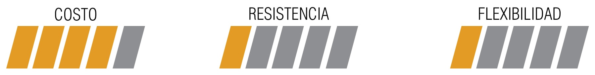

Es un PLA mezclado con partículas de grafito que permiten utilizar piezas en este material para circuitos de bajo voltaje, como sensores de tacto, leds o conexiones de arduino.
-Puede que sea ligeramente más resistente que el PLA, pero posee características muy similares.

Tomaron PLA y lo mezclaron con partículas de hierro que pueden ser atraídas por cualquier imán, que puede ser aplicado a proyectos escolares o piezas de repuesto que tienen que ser atraídas por imanes.

Presición de hasta 0.01mm.
-Fundicion por cera perdida.
-Es perfecto para hacer moldes y piezas de alta precisión como:
-Piezas complejas de joyería.
-Sellos.
-Figuras.